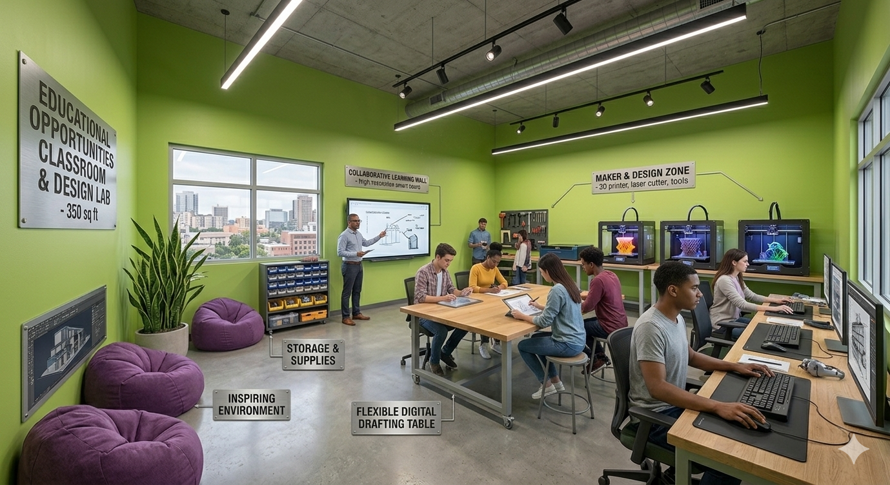
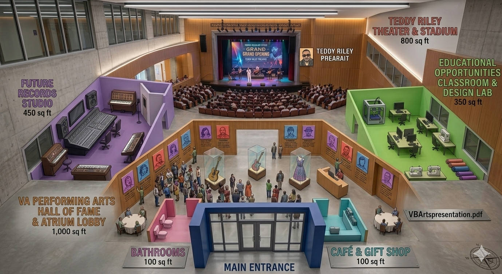
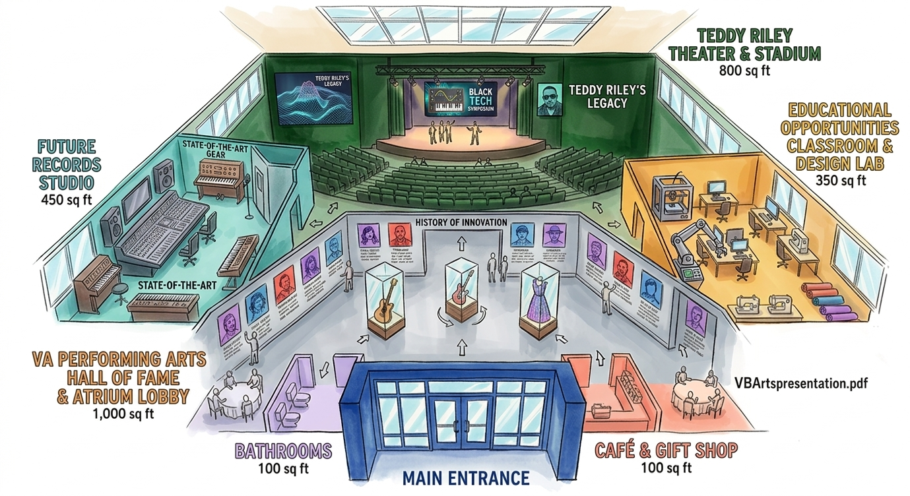
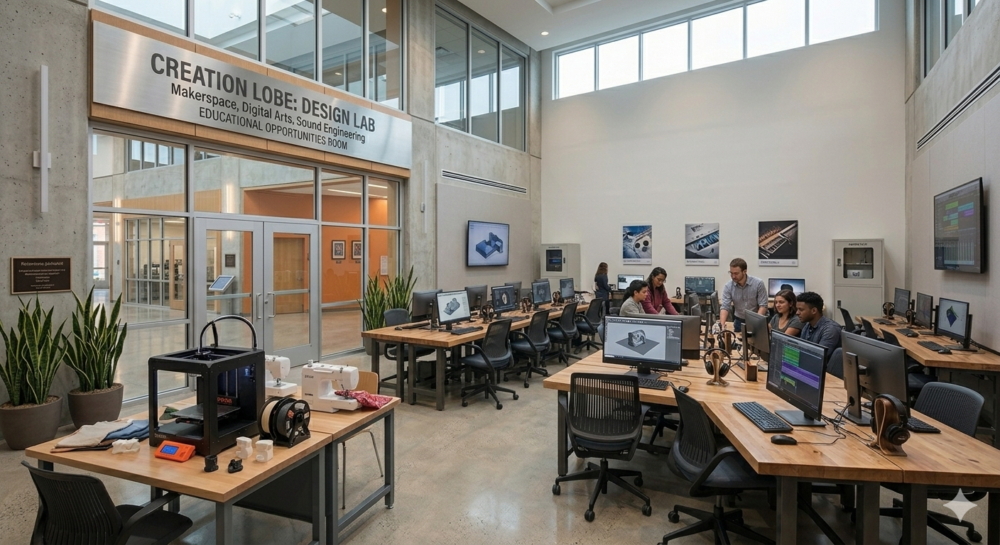

Mission
Preserve the legacy while building new opportunity. Every space in the concept is designed to help young artists learn craft, practice collaboration, and create real cultural impact through music and digital arts.
Rendition 2
A tribute concept rooted in mentorship, technology, and community. Inspired by Teddy Riley's spirit of innovation, this version frames TR Future Studios as a launchpad for musicians, producers, and multidimensional creatives.
Preserve the legacy while building new opportunity. Every space in the concept is designed to help young artists learn craft, practice collaboration, and create real cultural impact through music and digital arts.


This new studio visual sharpens the concept with tangible learning infrastructure. Future artists and musicians can move from idea to release in one environment designed for both creativity and technical excellence.
This new visual introduces a memory-and-motivation zone where artists can study milestones, hear the evolution of sound, and build identity as part of a living creative lineage.


The theater hall gives the concept its public heartbeat. It is where talent steps out, tests ideas in front of an audience, and turns creative growth into visible momentum.
Students explore beat making, songwriting, stagecraft, audio engineering, and creative technology.
In labs and studios, they prototype ideas, produce projects, and gain the confidence to release original work.
Performance spaces and mentorship networks connect talent to real audiences, careers, and entrepreneurship.


This is more than a memorial. It is a model that turns influence into infrastructure, ensuring the next generation of artists and musicians can carry forward the same fearless innovation Teddy Riley represented.
Compare With Rendition 1